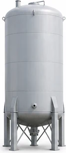
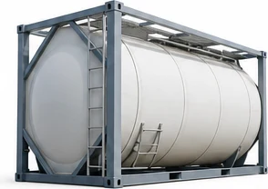
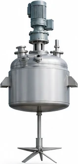
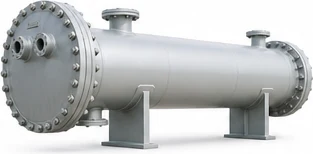
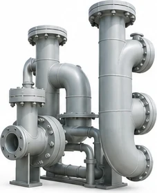
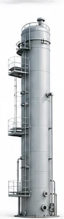
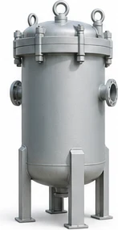
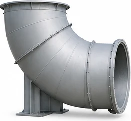
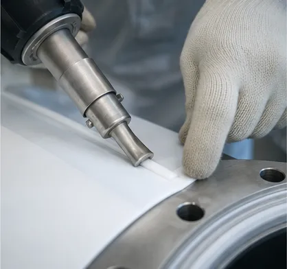

Equipment
対応できる設備
下記のほかにも、槽のふたやノズル、バルブまわりの部材など、形の決まっていないものもご相談ください。
-

貯槽タンク
酸やアルカリ、溶剤を貯めておく縦型・横型のタンクです。液面が上下する部分と底部は傷みやすいため、厚みや継ぎ目の位置をあらかじめ考えて貼り分けます。
- 塩酸・硫酸の貯槽
- 中和槽
- 原料タンク
-

ISOタンクコンテナ
高純度の薬液を運ぶタンクコンテナの内面に施工します。輸送中の揺れや温度の変化を受けるため、下地との密着をとくに丁寧に確かめています。
- 高純度薬液の輸送
- 電子材料向け
-

反応槽・撹拌翼
加温や撹拌を伴う反応槽と、その中で回る撹拌翼です。翼のように曲面が続く部材は、形に合わせてシートを成形してから貼り込みます。
- 反応槽
- 撹拌翼・シャフト
- ノズルまわり
-

熱交換器
多管式熱交換器の管板や水室など、腐食性の液が触れる部分に施工します。熱が加わる部材なので、温度の上がり下がりも含めて材料を選びます。
- 管板
- 水室・カバー
-

配管・継手
直管だけでなく、エルボやティー、レデューサーなどの継手にも内張りをします。フランジ面まで一続きに仕上げ、つなぎ目から液が回り込まないようにします。
- 移送配管
- エルボ・ティー
- フランジ面
-

充填塔
排ガスの洗浄や薬液の吸収に使う充填塔です。背が高く内部に支持部材のある設備は、分割して工場で施工し、現地で組み立てることもあります。
- スクラバー
- 吸収塔
-

ドラム・小型容器
試験用や小分け用のドラム、計量槽などの小さな容器です。少ない数量でも、大きな設備と同じ手順と検査で仕上げます。
- 計量槽
- 小分け容器
-

ダクト・排気系
腐食性のガスが通るダクトや、ファンまわりの部材です。結露した酸が溜まりやすい曲がりや継ぎ目の部分に、とくに気を配ります。
- 排気ダクト
- ファンケーシング
Scope
施工の範囲
設備の大きさや据え付けの状態によって、工場で施工するか、お客様の構内で施工するかを決めます。下記は目安です。
- 工場での施工
- 倉敷本社工場の3棟で施工します。胴の直径4m・長さ12m程度までの設備に対応しています
- 構内での施工
- 据え付けたままのタンクや大型の槽は、お客様の構内に足場と換気設備を組んで施工します
- 主な材料
- 凪シールド GC（ガラスクロス複合PTFEシート）のほか、使用条件に合わせてフッ素樹脂シートを選びます
- 検査
- ピンホール検査、厚み測定、外観検査。結果は報告書にまとめてお渡しします
- 補修・張り替え
- 部分的な補修から全面の張り替えまで。他社で施工した設備もまず状態を拝見します

Repair
補修と張り替え
長く使った内張りには、ふくれや継ぎ目の浮き、細かな傷が出てきます。早いうちに見つけて部分的に直せば、全面の張り替えまでの期間をのばせることもあります。
定期修理の期間は限られています。点検の結果をもとに、どこを直し、どこを次回に回すかを一緒に決め、その期間内に終わる工程を組みます。